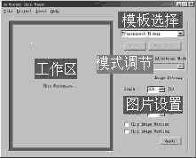

|
|
| 当前位置：电脑报电子版 > 1999 年 > 47 期 > 软件世界 > 为Winamp改头换面 |
| 《 为Winamp改头换面 》 |
| 在当今众多的MP3播放工具中Winamp可谓独领风骚，但它的外观界面（skin）多少显得有点单调。虽然现在有些新颖的外观界面可供选择，但也是众口难调。现在好了，有了Winamp Skin Maker（以下简称为WSM）你就可以随心所欲，把你喜欢的照片或图片设计成Winamp的外观界面。 如果你已经安装了Winamp并且运行正常、并且显卡有1MB以上的显存（为了得到更好的效果，要将颜色设置为16bit或更高），就可以使用它了。 一、准备你喜欢的图片 由于WSM仅支持BMP和JPG两种图象格式，所以要检查你的图片是不是这两种格式，否则就要用软件（如ACDSee32等）进行格式转换。然后将图片制作成275×116像素大小。二、外观界面的制作 1.选择图片：WSM可以对Winamp中的三个外观界面（主界面、EQ均衡器和播放清单编辑器）进行设计。2.图片设置：在“图片设置”区中，可以设置图片的大小、亮度和对比度，并可对图片进行水平和垂直翻转。 3.效果预览：点击“模板选择”处的“Make Skin！”按钮，就可以在“工作区”中预览效果；此时在“模板选择”处点击下拉按钮，可以选择透明、圆角和立体等六种不同的模板来预览各自的效果直至满意。 4.修改Winamp主界面的标题栏文本：点击“Modify Title Text”按钮，在弹出的对话框中输入文字内容（英文）后点击“OK”即可。 三、保存外观文件 点击“File”菜单、选择“Save”选项，在弹出的对话框中输入Winamp所在目录，并为你的外观文件命名（如：motor）后，点击“OK”按钮。四、在Winamp中的设置 运行Winamp，右键单击主界面的“标题栏”，在弹出菜单中选择“Options”→“Skin Browser…”，在弹出的对话框中选择“motor”。剩下要做的就是听音乐的同时欣赏你的杰作了。下载地址：http://members.tripod.com/ajie_g/skinner.htm，文件大小185KB。 （海南 苑作云） |
| 下载本期推荐软件 | 页 首 |
| 《电脑报》版权所有，电脑报网站编辑部设计制作发布 |